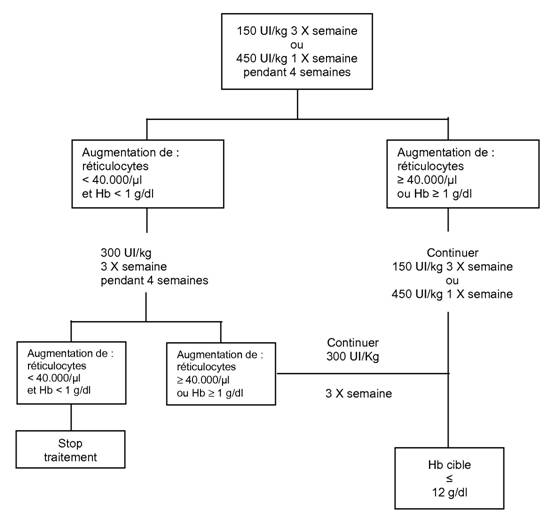

RÉSUMÉ DES CARACTÉRISTIQUES DU PRODUIT
ANSM - Mis à jour le : 12/03/2013
EPREX 40000 UI/ml, solution injectable
2. COMPOSITION QUALITATIVE ET QUANTITATIVE
Epoetine alfa* ............................................................................... 40 000 UI/ml (336,0 microgrammes par ml)
Un flacon de 1 ml contient 40 000 UI (336,0 microgrammes) d'époétine alfa
*Produite à partir de cellules ovariennes de hamster chinois par la technique de l'ADN recombinant.
Pour la liste complète des excipients, voir rubrique 6.1.
Solution injectable.
Solution transparente, incolore.
4.1. Indications thérapeutiques
· Traitement de l'anémie et réduction des besoins transfusionnels chez les patients adultes traités par chimiothérapie pour des tumeurs solides, des lymphomes malins ou des myélomes multiples et à risque de transfusion en raison de leur état général (par exemple état cardiovasculaire, anémie pré-existante au début de la chimiothérapie).
· EPREX peut être utilisé pour augmenter les dons de sang autologue chez des malades participant à un programme de transfusions autologues différées.
L'utilisation dans cette indication doit tenir compte du risque accru d'accidents thromboemboliques.
Le traitement est indiqué chez les malades présentant une anémie modérée (Hb: 10-13 g/dl soit 6,21-8,07 mmol/l) et sans carence martiale, s'il n'existe pas ou peu de méthodes d'épargne du sang lorsqu'une intervention chirurgicale programmée importante nécessite de grandes quantités de sang (4 unités de sang ou plus chez les femmes et 5 unités de sang ou plus chez les hommes).
· EPREX peut être utilisé pour réduire l'exposition aux transfusions de sang homologue chez les patients adultes, sans carence martiale, devant bénéficier d'une intervention chirurgicale orthopédique majeure programmée, ayant un risque présumé important de complications transfusionnelles.
L'utilisation devra être réservée aux patients ayant une anémie modérée (par exemple Hb: 10-13 g/dl) qui n'ont pas accès à un programme de prélèvement autologue différé et chez lesquels on s'attend à des pertes de sang modérées (900 à 1800 ml).
Les bonnes pratiques de gestion du sang doivent toujours être appliquées dans le contexte chirurgical.
4.2. Posologie et mode d'administration
Mode d'emploi
Comme pour tout produit injectable, vérifier qu'il n'y a ni particules en suspension ni changement de coloration.
a) Injection par voie intraveineuse: en 1 à 5 minutes au moins, selon la dose totale.
Une injection plus lente est préférable chez les patients qui auraient présenté des symptômes pseudo-grippaux.
Ne pas administrer en perfusion intraveineuse, ni en mélange avec d'autres médicaments.
b) Injection par voie sous-cutanée: on ne doit généralement pas excéder un volume maximal de 1 ml par site d'injection. En cas de volume plus important, utiliser plus d'un site d'injection.
Les injections se font au niveau des membres ou de la paroi abdominale antérieure.
Dans le cas où le médecin décide que le patient ou le personnel soignant peut administrer EPREX par voie sous-cutanée de manière sûre et efficace, des instructions sur le dosage et l'administration doivent être fournies.
Voir la rubrique 3.Comment utiliser EPREX (instructions pour l'injection d'EPREX) de la notice.
Traitement des patients ayant une anémie induite par la chimiothérapie:
EPREX doit être administré par voie sous -cutanée aux patients ayant une anémie (c'est à dire un taux d'hémoglobine ≤ 10 g/dl (6,2 mmol/l)). Les symptômes et conséquences de l'anémie peuvent varier avec l'âge, le sexe et l'impact global de la maladie; une évaluation par le médecin de l'état de santé et de l'évolution clinique du patient est nécessaire.
En raison de la variabilité intra-patient, des valeurs individuelles et occasionnelles du taux d'hémoglobine au dessus et au dessous du taux d'hémoglobine désiré peuvent être observées chez un même patient. La variabilité du taux d'hémoglobine doit être prise en compte par l'adaptation de la posologie en tenant compte de l'intervalle cible d'hémoglobine de 10 g/dl (6,2 mmol/l) à 12 g/dl (7,5 mmol/l). Un taux d'hémoglobine prolongé supérieur à 12 g/dl (7,5 mmol/l) doit être évité; des recommandations sur l'adaptation posologique appropriée lorsque les taux d'hémoglobine dépassent 12 g/dl (7,5 mmol/l) sont décrites ci-dessous.
Epoétine alfa doit continuer a être administrée pendant un mois après la fin de la chimiothérapie.
La dose initiale est de 150 UI/kg administrée par voie sous-cutanée 3 fois par semaine. Alternativement, EPREX peut être administrée par voie sous cutanée à la dose initiale de 450 UI/kg 1 fois par semaine. Si l'hémoglobine a augmenté d'au moins 1 g/dl (0,62 mmol/l), ou si les réticulocytes ont augmenté d'au moins 40.000/µl par rapport aux valeurs initiales après 4 semaines de traitement, la dose doit rester à 150 UI/kg 3 fois par semaine ou 450 UI/kg 1 fois par semaine. Si l'augmentation de l'hémoglobine est inférieure à 1 g/dl (inférieure à 0,62 mmol/l) et si les réticulocytes ont augmenté de moins de 40.000/µl par rapport aux valeurs initiales, augmenter la dose à 300 UI/kg 3 fois par semaine. Si après 4 semaines supplémentaires de traitement à 300 UI/kg 3 fois par semaine, l'hémoglobine a augmenté d'au moins 1 g/dl (au moins 0,62 mmol/l) ou les réticulocytes ont augmenté d'au moins 40000/µl la dose de 300 UI/kg 3 fois par semaine doit être maintenue. Cependant si l'hémoglobine a augmenté de moins de 1 g/dl (moins de 0,62 mmol) et les réticulocytes ont augmenté de moins de 40.000/µl par rapport aux valeurs initiales, la réponse est improbable et le traitement doit être arrêté. Le schéma thérapeutique proposé est décrit ci-après.

Les patients doivent être étroitement surveillés afin de s'assurer que la plus faible dose d'Agent Stimulant l'Erythropoïèse (ASE) soit utilisée pour obtenir un contrôle adéquat des symptômes de l'anémie.
Adaptation des doses pour maintenir le taux d'hémoglobine entre 10 et 12 g/dl:
Si le taux d'hémoglobine augmente de plus de 2 g/dl (1,25 mmol/l) par mois, ou si le taux d'hémoglobine dépasse 12 g/dl (7,5 mmol/l), réduire la dose d'époétine alfa d'environ 25 % à 50 %.
Si le taux d'hémoglobine dépasse 13 g/dl (8,1 mmol/l) interrompre le traitement jusqu'à ce que le taux s'abaisse en dessous de 12 g/dl (7,5 mmol/l) et reprendre le traitement par époétine alfa à une dose de 25 % inférieure à la dose précédente.
Patients adultes en chirurgie participant à un programme de prélèvements autologues différés
La voie intraveineuse doit être utilisée.
Lors des prélèvements sanguins, époétine alfa doit être administrée après la fin du prélèvement de sang.
La posologie d'époétine alfa chez les patients ayant une anémie modérée (hématocrite entre 33 et 39 %) qui doivent donner au moins 4 unités de sang, est de 600 UI/kg 2 fois par semaine pendant 3 semaines avant l'intervention. En utilisant cette posologie, il a été possible d'obtenir au moins 4 unités de sang chez 81 % des patients traités par époétine alfa comparés à 37 % des patients du groupe placebo. Epoétine alfa a réduit les risques d'exposition au sang homologue de 50 % par comparaison aux patients ne recevant pas époétine alfa.
Tous les patients traités par époétine alfa doivent recevoir une supplémentation en fer appropriée (par exemple 200 mg par jour de fer élément per os) pendant toute la durée du traitement par époétine alfa. La supplémentation en fer devra commencer le plus tôt possible, voire même plusieurs semaines avant le début du prélèvement autologue, afin d'atteindre des réserves en fer importantes avant de commencer le traitement par époétine alfa.
Patients adultes devant bénéficier d'une chirurgie orthopédique majeure programmée
La voie sous-cutanée doit être utilisée.
La dose recommandée est de 600 UI/kg d'époétine alfa, une fois par semaine pendant les 3semaines qui précèdent l'intervention chirurgicale (aux jours -21, -14, -7) et le jour même de l'intervention.
Dans le cas où la période d'intervention doit être réduite pour des raisons médicales à moins de 3 semaines, l'époétine alfa doit être administrée à la dose de 300 UI/kg tous les jours, pendant 10 jours consécutifs avant l'intervention, le jour de l'intervention et pendant les 4 jours suivant l'intervention. Lors du bilan biologique pré-opératoire, si le taux d'hémoglobine atteint 15 g/dl ou plus, l'administration d'époétine alfa doit être arrêtée et les doses ultérieures initialement prévues ne doivent pas être administrées.
Il faut s'assurer que les patients ne sont pas déficients en fer à l'instauration du traitement.
Tous les patients traités par époétine alfa doivent recevoir une supplémentation en fer appropriée (par exemple 200 mg/jour de fer élément per os) pendant toute la durée du traitement par époétine alfa. Si possible, la supplémentation en fer devra être commencée avant le traitement par époétine alfa, pour constituer des réserves en fer suffisantes.
Les patients ayant développé une érythroblastopénie à la suite d'un traitement par une érythropoiétine ne doivent pas être traités par EPREX ou par tout autre érythropoiétine (voir rubrique 4.4 - paragraphe Erythroblastopénie).
Hypertension non contrôlée.
Toutes les contre-indications associées à un programme de prélèvement autologue différé doivent être respectées chez les patients qui reçoivent l'époétine alfa au cours d'un tel programme.
Hypersensibilité à la substance active ou à l'un des excipients.
L'utilisation d'époétine alfa, chez les patients devant bénéficier d'une intervention chirurgicale orthopédique majeure programmée et ne participant pas à un programme de prélèvement autologue différé, est contre-indiquée:
· chez les patients présentant une pathologie vasculaire sévère coronarienne,
· chez les patients présentant une pathologie vasculaire sévère carotidienne,
· chez les patients présentant une pathologie sévère des artères périphériques ou cérébrales, y compris chez les patients présentant des antécédents récents d'infarctus du myocarde ou d'accident vasculaire cérébral,
· chez les patients qui, quelque soit la raison, ne peuvent pas recevoir une prophylaxie antithrombotique appropriée.
4.4. Mises en garde spéciales et précautions d'emploi
Chez tous les patients traités par époétine alfa, la tension artérielle doit être suivie étroitement et contrôlée de façon appropriée. Epoétine alfa doit être utilisée avec précaution en présence d'une hypertension non ou insuffisamment traitée ou difficilement contrôlable. Il peut être nécessaire d’instaurer ou d'augmenter le traitement anti‑hypertenseur. Si la pression artérielle ne peut être contrôlée, le traitement par époétine alfa doit être interrompu.
Epoétine alfa doit également être utilisée avec précaution en présence d'épilepsie et d'insuffisance hépatique chronique.
Les taux d'hémoglobine doivent être régulièrement mesurés chez les patients insuffisants rénaux chroniques ou cancéreux jusqu'à ce qu'un taux stable soit atteint, et périodiquement par la suite.
Chez tous les patients, les taux d’hémoglobine doivent être étroitement surveillés en raison du risque potentiel augmenté d’évènements thrombo-emboliques et d’évolutions fatales lorsque les patients sont traités à des taux d’hémoglobine supérieurs au taux cible de l’indication utilisée.
Lors d'un traitement par époétine alfa, on peut également observer une augmentation modeste mais dose-dépendante du chiffre des plaquettes, dans les limites de la normale. Celle-ci régresse avec la poursuite du traitement. De plus, des cas de thrombocytémie supérieure au taux normal ont été rapportés. Il est conseillé de surveiller le chiffre des plaquettes à intervalles réguliers pendant les 8 premières semaines de traitement.
Toutes les autres causes d'anémie (déficit en fer, hémolyse, pertes sanguines, déficit en vitamine B12 ou en folate) doivent être prises en compte et traitées avant d'initier le traitement par époétine alfa. Dans la plupart des cas, les taux de ferritine sérique chutent parallèlement à l'augmentation de l'hématocrite. Afin d'obtenir une réponse optimale au traitement par époétine alfa, il faut s'assurer que les réserves en fer sont suffisantes :
· Un traitement substitutif en fer de 200 à 300 mg/jour par voie orale est recommandé chez tous les patients cancéreux dont le coefficient de saturation de transferrine est inférieur à 20 %.
Chez les patients cancéreux, l'ensemble de ces autres facteurs d'anémie pré-cités doivent être aussi soigneusement examinés avant de décider d’augmenter la posologie d'époétine alfa.
L’apparition ou l’aggravation d’une porphyrie a été très rarement observée chez des patients traités par époétine alfa. L’époétine alfa doit être utilisée avec précaution chez les patients atteints de porphyrie.
Afin d’améliorer la traçabilité des ASE, le nom commercial de l’ASE administré doit être clairement enregistré (ou spécifié) dans le dossier patient.
Les patients ne peuvent voir leur traitement modifié d’un ASE à un autre que sous une surveillance adaptée.
Erythroblastopénies
Des érythroblastopénies avec anticorps ont été rapportées après plusieurs mois ou années de traitement par époétine par voie sous-cutanée principalement chez des patients en insuffisance rénale chronique. Des cas ont également été rapportés chez des patients atteints d’hépatite C et traités par interféron et ribavirine lors de l’utilisation concomitante d’ASE. EPREX n’est pas approuvé dans la prise en charge de l’anémie associée à une hépatite C.
Chez les patients présentant une perte soudaine d’efficacité définie par une baisse de l’hémoglobine (de 1 à 2 g/dl par mois), avec augmentation des besoins transfusionnels, une numération des réticulocytes devra être réalisée et les causes habituelles de non réponse (déficit en fer, folates ou vitamine B12, intoxication à l’aluminium, infection ou inflammation, pertes sanguines et hémolyse) devront être recherchées.
Une diminution paradoxale du taux d’hémoglobine et le développement d’une anémie sévère associée à un faible taux de réticulocytes imposent l’arrêt immédiat du traitement par EPREX et une recherche des anticorps anti-érythropoïétine. Une ponction médullaire devra aussi être envisagée pour confirmer le diagnostic d’érythroblastopénie.
Aucun traitement par un autre ASE ne devra être débuté en raison du risque de réaction croisée.
Traitement des patients ayant une anémie induite par la chimiothérapie :
Les érythropoïétines sont des facteurs de croissance qui stimulent essentiellement la production de globules rouges. Des récepteurs à l’érythropoïétine peuvent être présents à la surface de diverses cellules malignes. Comme pour tout facteur de croissance, la possibilité que les érythropoïétines puissent stimuler la croissance de tumeur ne peut pas être exclue. Dans plusieurs études contrôlées, les époétines n’ont pas montré d’amélioration de la survie globale ou de diminution du risque de progression tumorale chez les patients présentant une anémie associée à un cancer.
Dans des études cliniques contrôlées, l’utilisation d’EPREX ou d’autres ASE a montré :
· une diminution du contrôle loco-régional chez des patients atteints d’un cancer de la tête et du cou avancé recevant une radiothérapie lorsque l’administration visait un taux d’hémoglobine supérieur à 14 g/dl (8,7 mmol/l),
· un raccourcissement de la survie globale et une augmentation du nombre de décès attribués à la progression de la maladie à 4 mois chez des patients atteints d’un cancer du sein métastatique recevant une chimiothérapie lorsque l’administration visait un taux d’hémoglobine de 12 à 14 g/dl (7,5 à 8,7 mmol/l),
· une augmentation du risque de décès lorsque l’administration visait un taux d’hémoglobine de 12 g/dl (7,5 mmol/l) chez des patients ayant une maladie maligne active ne recevant ni chimiothérapie ni radiothérapie. Les ASE ne sont pas indiqués pour une utilisation dans cette population de patients.
Au vu des informations ci-dessus, dans certaines situations cliniques, la transfusion sanguine devrait être le traitement privilégié de l’anémie des patients atteints de cancer. La décision d’administrer une érythropoïétine recombinante doit être déterminée sur une évaluation du bénéfice/risque prenant en compte l’avis du patient dans son contexte clinique spécifique. Les facteurs à considérer dans cette évaluation doivent inclure le type de tumeur et son stade, le degré de l’anémie, l’espérance de vie, l’environnement dans lequel le patient est traité et la préférence du patient (voir rubrique 5.1).
Lorsque l'on évalue le caractère approprié d'un traitement par époétine alfa chez les patients cancéreux recevant une chimiothérapie (patient à risque d'être transfusé), il faut tenir compte du fait que l'apparition des globules rouges suit l'administration de l’ASE avec un délai de 2 à 3 semaines.
Une augmentation de l’incidence des événements vasculaires thrombotiques (EVT) ayant été observée chez les patients cancéreux recevant des ASE (voir rubrique 4.8), ce risque doit être soigneusement évalué au regard du bénéfice de ce traitement (avec l’époétine alfa) particulièrement chez les patients cancéreux ayant un risque augmenté d’événements vasculaires thrombotiques, comme l’obésité et les patients ayant des antécédents d’EVT (par exemple thrombose veineuse profonde ou embolie pulmonaire). Une étude clinique (étude BEST) chez des patientes ayant un cancer du sein métastatique a été réalisée afin de déterminer si le traitement par époétine alfa au-delà de la correction de l’anémie pouvait améliorer les résultats thérapeutiques. Dans cette étude l’incidence d’évènements thrombo-emboliques fatals a été plus élevée chez les patients recevant l’époétine alfa que chez les patients recevant un placebo.
Patients adultes en chirurgie participant à un programme de prélèvements autologues différés
Toutes les Mises en garde et précautions particulières d'emploi associées à un programme de prélèvement autologue différé doivent être respectées chez les patients recevant époétine alfa en particulier le remplacement en routine du volume prélevé.
Patients adultes devant bénéficier d'une chirurgie orthopédique majeure programmée
Chez les patients devant bénéficier d'une intervention chirurgicale orthopédique majeure programmée, la cause de l'anémie doit être établie et traitée, si possible, avant l'instauration du traitement par l'époétine alfa.
Les événements thromboemboliques peuvent être un risque éventuel dans cette population et cette éventualité doit être soigneusement évaluée en fonction du bénéfice du traitement attendu chez ces patients.
Les patients devant bénéficier d'une chirurgie orthopédique majeure programmée, doivent recevoir une prophylaxie antithrombotique appropriée, dans la mesure où des événements thromboemboliques peuvent survenir chez ces patients, particulièrement chez ceux ayant une pathologie cardio-vasculaire sous-jacente. De plus, des précautions particulières doivent être prises chez les patients à risque de développer des thromboses veineuses profondes.
Enfin, chez les patients ayant un taux initial d'hémoglobine supérieur à 13 g/dl, la possibilité que le traitement par époétine alfa soit associé à un risque accru d'événements thromboemboliques post-opératoires, ne peut-être exclue. En conséquence, l'époétine alfa ne doit pas être utilisée chez les patients qui ont un taux d'hémoglobine initial supérieur à 13 g/dl.
Patients en insuffisance rénale chronique:
Les patients en insuffisance rénale chronique traités par EPREX par voie sous-cutanée, devront être suivis régulièrement afin de rechercher une perte d’efficacité, définie par l’absence de réponse ou une diminution de réponse au traitement par EPREX chez des patients antérieurement répondeurs à ce traitement. Cette perte d’efficacité est caractérisée par une diminution constante de l’hémoglobine malgré l’augmentation des doses d’EPREX.
Ce médicament contient moins de 1 mmole de sodium (23 mg) par dose, c’est à dire qu’il est essentiellement sans sodium.
4.5. Interactions avec d'autres médicaments et autres formes d'interactions
Il n'existe aucune donnée qui indique une éventuelle interaction d'époétine alfa avec le métabolisme d'autres médicaments. Cependant, étant donné que la ciclosporine se lie aux hématies, une interaction demeure possible. Si l'époétine alfa est administrée en association avec la ciclosporine, les taux sanguins de ciclosporine doivent être surveillés et la dose de ciclosporine ajustée en fonction de l'augmentation de l'hématocrite.
Il n'existe pas de données indiquant une interaction entre le G-CSF, le GM-CSF et l'époétine alfa en ce qui concerne la différentiation ou la prolifération hématologique d'échantillons de biopsies tumorales in vitro.
Il n'existe aucune étude spécifique et contrôlée chez la femme enceinte. Les études chez l'animal ont montré un effet toxique lors de la reproduction (voir rubrique 5.3)
En conséquence: l'utilisation d'époétine alfa n'est pas recommandée chez les patientes enceintes ou allaitant, participant à un programme de prélèvement autologue différé avant chirurgie.
Il n'a pas été établi si l'époétine alfa exogène est excrétée dans le lait humain. L'époétine alfa doit être utilisée avec précaution chez la femme qui allaite. La décision de continuer/interrompre l'allaitement ou de continuer/interrompre le traitement par époétine alfa doit tenir compte du bénéfice de l'allaitement de l'enfant et du bénéfice du traitement par époétine alfa de la mère.
4.7. Effets sur l'aptitude à conduire des véhicules et à utiliser des machines
Sans objet.
Chez les patients atteints de cancer et les patients en insuffisance rénale chronique, l'effet indésirable le plus fréquent lors du traitement par époétine alfa est une augmentation dose-dépendante de la pression artérielle ou l'aggravation d'une hypertension pré-existante. Une surveillance de la pression artérielle doit être réalisée en particulier en début de traitement (voir rubrique 4.4).
Les autres effets indésirables fréquents, observés lors des études cliniques sont thrombose veineuse profonde, embolie pulmonaire, crise convulsive, diarrhée, nausée, céphalée, symptômes grippaux, pyrexie, éruption et vomissement. Des symptômes grippaux tels que céphalées, douleurs articulaires, myalgie et pyrexie peuvent survenir, en particulier en début de traitement. Les fréquences peuvent varier selon l'indication (voir le tableau ci-dessous).
Une congestion des voies respiratoires, incluant des évènements de congestion des voies respiratoires supérieures, des congestions nasales et des rhinopharyngites, ont été rapportés lors d’études chez des patients adultes insuffisants rénaux non encore dialysés traités avec un intervalle d’administration prolongé.
Les effets indésirables graves incluent les thromboses veineuses ou artérielles et les embolies (dont certaines avec issue fatale), tels que thrombose veineuse profonde, embolie pulmonaire, thrombose artérielle (incluant infarctus du myocarde et ischémie myocardique), thrombose rétinienne, thrombose d'une dérivation artério-veineuse (dont la fistule du dialysé). De plus, des accidents cérébro-vasculaires (incluant infarctus cérébral et hémorragie cérébrale) et des accidents ischémiques transitoires ont été rapportés lors des études cliniques avec l'époétine alfa.
Des cas d’anévrysme ont été rapportés.
Des réactions d'hypersensibilité, incluant éruption, urticaire, réaction anaphylactique et œdème angioneurotique ont été rapportées.
Des crises hypertensives avec encéphalopathie et crise convulsive, nécessitant l'attention immédiate d'un médecin et la prise en charge en soins intensifs, sont également survenues chez des patients dont la tension était préalablement normale ou basse. Une attention particulière devra être accordée aux céphalées à type de migraines violentes et à début brutal, comme un possible signal d'alarme.
Des érythroblastopénies avec anticorps anti-érythropoïétine ont été rapportées dans de très rares cas (<1/10000) après plusieurs mois ou années de traitement par EPREX (voir rubrique 4.4).
Le profil de sécurité d’EPREX, a été évalué chez 142 sujets ayant une insuffisance rénale chronique et chez 765 sujets atteints de cancer, qui ont participé aux études cliniques d'enregistrement, en double aveugle versus placebo.
Les effets indésirables rapportés par plus de 0,2 % des patients traités par EPREX, dans ces études cliniques, lors d'autres études cliniques et de l'expérience post-commercialisation, sont listés ci-dessous par systèmes d'organes et par fréquence.
Les fréquences sont définies de la manière suivante : très fréquent (≥1/10) ; fréquent (≥1/100, <1/10) ; peu fréquent (≥1/1 000, <1/100) ; rare (≥1/10 000, <1/1 000) ; très rare (<1/10 000). Une fréquence est définie comme inconnue si l'effet indésirable n'a pas été reporté dans une étude d'enregistrement en double aveugle versus placebo ou lorsque la fréquence n'a pas pu être estimée à partir d'autres données disponibles.
Dans chaque groupe de fréquence, les effets indésirables sont présentés par ordre décroissant de gravité.
|
Classes de systèmes d'organes |
Fréquence |
Effet indésirable |
|
Affections hématologiques et du système lymphatique |
Peu fréquent |
Thrombocythémie (patients cancéreux) |
|
|
Fréquence inconnue |
Erythroblastopénie induite par un anticorps anti-érythropoïétine1 Thrombocythémie (patients en insuffisance rénale chronique) |
|
Affection du système immunitaire |
Fréquence inconnue |
Réaction anaphylactique Hypersensibilité |
|
Affections du système nerveux |
Très fréquent |
Céphalée (patients cancéreux) |
|
|
Fréquent |
Crise convulsive (patients en insuffisance rénale chronique) Céphalée (patients en insuffisance rénale chronique) |
|
|
Peu fréquent |
Hémorragie cérébrale2 Crise convulsive (patients cancéreux) |
|
|
Fréquence inconnue |
Accident cérébrovasculaire2 Encéphalopathie hypertensive Accident ischémique transitoire |
|
Affections oculaires |
Fréquence inconnue |
Thrombose rétinienne |
|
Affections vasculaires |
Fréquent |
Thrombose veineuse profonde2 (patients cancéreux) Hypertension |
|
|
Fréquence inconnue |
Thrombose veineuse profonde2 (patients en insuffisance rénale chronique) Thrombose artérielle Crise hypertensive |
|
Affections respiratoires, thoraciques et médiastinales |
Fréquent |
Embolie pulmonaire2 (patients cancéreux) |
|
|
Fréquence inconnue |
Embolie pulmonaire2 (patient en insuffisance rénale chronique) |
|
Affections gastro-intestinales |
Très fréquent |
Nausée |
|
|
Fréquent |
Diarrhée (patients cancéreux) Vomissement |
|
|
Peu fréquent |
Diarrhée (patient en insuffisance rénale chronique) |
|
Affections de la peau et du tissu sous-cutané |
Fréquent |
Eruption |
|
|
Fréquence inconnue |
Œdème angioneurotique Urticaire |
|
Affections musculo-squelettiques, des tissus conjonctifs et des os |
Très fréquent |
Arthralgie (patient en insuffisance rénale chronique) |
|
|
Fréquent |
Arthralgie (patients cancéreux) |
|
|
Peu fréquent |
Myalgie (patients cancéreux) |
|
|
Fréquence inconnue |
Myalgie (patient en insuffisance rénale chronique) |
|
Affections congénitales, familiales et génétiques |
Fréquence inconnue |
Porphyrie |
|
Troubles généraux et anomalies au site d'administration |
Très fréquent |
Pyrexie (patients cancéreux) Symptômes pseudo-grippaux (patient en insuffisance rénale chronique) |
|
|
Fréquent |
Symptômes pseudo-grippaux (patients cancéreux) |
|
|
Fréquence inconnue |
Traitement inefficace Œdème périphérique Pyrexie (patient en insuffisance rénale chronique) Réaction au site d'injection |
|
Investigations |
Fréquence inconnue |
Anticorps anti-érythropoïétine positif1 |
|
Lésions, intoxications et complications liées aux procédures |
Fréquent |
Thrombose d'une dérivation artério-veineuse incluant la fistule de dialyse (patient en insuffisance rénale chronique) |
1La fréquence ne peut pas être estimée des essais cliniques
2Incluant des cas d’issue fatale
Patients en insuffisance rénale chronique
Chez les patients en insuffisance rénale chronique, un taux d’hémoglobine supérieur à 12 g/dl peut être associé à un risque plus élevé d’évènements cardiovasculaires, incluant le décès (voir rubrique 4.4).
Des thromboses de la fistule artério-veineuse sont survenues chez les patients hémodialysés, en particulier chez ceux ayant tendance à l'hypotension ou présentant des complications au niveau de leur fistule (par exemple sténoses, anévrysmes, etc) (voir rubrique 4.4).
Patients atteints de cancer
Une augmentation de l’incidence des évènements thrombo-emboliques a été rapportée chez des patients atteints de cancer recevant des ASE, incluant l'époétine alfa (cf. rubrique 4.4).
Patients devant bénéficier d'une chirurgie
Chez les patients devant bénéficier d'une chirurgie orthopédique majeure programmée et ayant un taux initial d'hémoglobine de 10 à 13 g/dl, l'incidence des événements thrombo-emboliques (dont la plupart étaient des thromboses veineuses profondes), dans l'ensemble des essais cliniques, s'est avéré être similaire dans les différents groupes traités par époétine alfa et dans le groupe placebo. Néanmoins l'expérience clinique est limitée.
De plus, chez les patients ayant un taux initial d'hémoglobine supérieur à 13 g/dl, la possibilité que le traitement par époétine alfa soit associé à un risque accru d'événements thrombo-emboliques post-opératoires, ne peut-être exclue.
La marge thérapeutique d'époétine alfa est très large. Un surdosage d'époétine alfa peut entraîner une exacerbation des effets pharmacologiques de l'hormone. Une saignée peut être pratiquée si un taux excessif d'hémoglobine est atteint. Tout autre traitement médical nécessaire doit être mis en place.
5. PROPRIETES PHARMACOLOGIQUES
5.1. Propriétés pharmacodynamiques
Classification ATC : BO3XA01- AUTRES ANTI-ANEMIQUES/ERYTHROPOIETINE
(B : sang et organes hématopoïétiques)
Généralités
L'érythropoïétine est une glycoprotéine qui stimule la formation d'hématies à partir des cellules souches de la moelle osseuse ; elle agit à ce niveau en tant qu'hormone de différentiation et facteur stimulant les mitoses.
Le poids moléculaire apparent de l'érythropoïétine se situe entre 32 000 et 40 000 daltons. La fraction protéique représente environ 58 % de la molécule et est constituée de 165 acides aminés. Les quatre chaînes glucidiques sont attachées à la protéine par trois liaisons N-glycosidique et une liaison O-glycosidique. L’époétine alfa obtenue par génie génétique est glycosylée. Sa composition en aminoacides et hydrates de carbone est identique à l'érythropoïétine endogène humaine isolée des urines de patients anémiques.
L'époétine alfa est hautement purifiée selon les méthodes de pointe actuelles. En particulier, aux concentrations de principe actif utilisées chez l'homme, on ne peut détecter aucun résidu de la lignée cellulaire utilisée dans sa production.
L'efficacité biologique de l’époétine alfa a été démontrée grâce aux différents modèles in vivo chez l'animal (rats normaux et anémiques, souris ayant une polyglobulie). Après administration d'époétine alfa, la numération érythrocytaire, le taux d'hémoglobine et le chiffre des réticulocytes augmentent, de même que le taux d'incorporation de 59Fe.
Après incubation de cellules nucléées érythroïdes spléniques in vitro avec époétine alfa (culture cellulaire de cellules spléniques de souris), il a été observé une augmentation de l'incorporation de 3H ‑ thymidine.
Grâce à des cellules de moelle osseuse humaine en culture, il a pu être démontré que l'époétine alfa stimule spécifiquement l'érythropoïèse sans avoir d'effets sur la leucopoïèse. Aucune action cytotoxique d'époétine alfa sur les cellules de moelle osseuse humaine n'a été détectée.
Patients adultes insuffisants rénaux non encore dialysés
Dans deux études au cours desquelles EPREX était administré avec un intervalle prolongé (3 fois par semaine, une fois par semaine, une fois toutes les deux semaines et une fois toutes les 4 semaines), certains patients traités avec des intervalles d’administration prolongés n’ont pas maintenu un taux d’hémoglobine approprié et ont atteint le taux limite d’hémoglobine défini dans le protocole comme critère de sortie d’étude (0% dans le groupe une fois par semaine, 3,7% dans le groupe une fois toutes les 2 semaines et 3,3% dans le groupe une fois toutes les 4 semaines).
Traitement des patients ayant une anémie induite par la chimiothérapie
721 patients cancéreux recevant une chimiothérapie sans platine ont été inclus dans 3 études contrôlées versus placebo. 389 patients présentaient des hémopathies malignes (221 myélomes multiples, 144 lymphomes non hodgkiniens et 24 autres hémopathies malignes) et 332 patients présentaient des tumeurs solides (172 cancers du sein, 64 cancers gynécologiques, 23 cancers du poumon, 22 cancers de la prostate, 21 cancers gastro-intestinaux et 30 autres types de cancer). Dans 2 larges études en ouvert, 2697 patients cancéreux recevant une chimiothérapie sans platine ont été inclus, 1895 patients présentaient des tumeurs solides (683 cancers du sein, 260 cancers du poumon, 174 cancers gynécologiques, 300 cancers gastro-intestinaux et 478 autres types de cancer) et 802 présentaient des hémopathies malignes.
Dans une étude prospective, randomisée, en double aveugle, contrôlée versus placebo, conduite chez 375 patients anémiés recevant une chimiothérapie sans platine pour diverses hémopathies malignes de type non myéloïdes, il a été observé une diminution significative des conséquences de l'anémie (par exemple : fatigue, baisse d'énergie et réduction de l'activité) mesurées par les instruments et échelles suivantes : Echelle générale d'évaluation fonctionnelle du traitement de l'anémie du cancer FACT-an, échelle de fatigue FACT-an, et échelle analogue linéaire du cancer (CLAS). Deux autres études, randomisées, contrôlées versus placebo, d'effectif plus réduit n'ont pas permis de montrer une amélioration significative des paramètres de qualité de vie sur les échelles EORTC-QLQ-C30 et CLAS respectivement.
L’érythropoïétine est un facteur de croissance qui stimule essentiellement la production de globules rouges. Des récepteurs à l’érythropoïétine peuvent être présents à la surface de diverses cellules malignes.
La survie et la progression tumorale ont été étudiées dans cinq larges études contrôlées incluant un total de 2833 patients dont quatre étaient des études contrôlées contre placebo en double aveugle et une était une étude ouverte. Les études ont soit recruté des patients qui étaient traités par chimiothérapie (deux études) soit utilisé des populations de patients chez lesquelles les ASE n’étaient pas indiqués : anémie chez des patients cancéreux ne recevant pas de chimiothérapie, et patients avec cancers de la tête et du cou recevant une radiothérapie. Le taux d’hémoglobine cible dans deux études était >13 g/dl ; dans les trois autres études il était compris entre 12 et 14 g/dl. Dans l’étude ouverte il n’y a pas eu de différence de la survie globale entre les patients traités par érythropoïétine recombinante humaine et les groupes contrôles. Dans les quatre études contrôlées contre placebo les rapports de risques pour la survie globale ont été compris entre 1,25 et 2,47 en faveur des groupes contrôles. Ces études ont montré de façon cohérente un excès de mortalité inexpliqué, statistiquement significatif, chez les patients qui avaient une anémie associée à différents types de cancers fréquents qui recevaient une érythropoïétine recombinante humaine par comparaison aux groupes contrôles. Les résultats de survie globale dans les études ne pouvaient pas être expliqués de façon satisfaisante par les différences d’incidence de thromboses et complications associées entre ceux recevant une érythropoïétine recombinante humaine et ceux du groupe contrôle.
Une analyse des données individuelles a également été réalisée sur plus de 13 900 patients cancéreux (traités par chimio, radio, radio et chimiothérapie ou non traités) participant à 53 études contrôlées conduites avec plusieurs époétines. La méta-analyse des données de survie globale a montré un risque relatif estimé à 1,06 en faveur du groupe contrôle (IC 95% : 1,00, 1,12 ; 53 études et 13 933 patients) et pour les patients cancéreux traités par chimiothérapie, le risque relatif pour la survie globale a été de 1,04 (IC 95% : 0,97, 1,11 ; 38 études et 10 441 patients). Les méta-analyses ont également montré une augmentation significative constante du risque relatif d’évènements thromboemboliques chez les patients cancéreux recevant une érythropoïétine recombinante humaine (voir rubrique 4.4).
5.2. Propriétés pharmacocinétiques
· Par voie intraveineuse:
Le dosage d'époétine alfa par administration intraveineuse répétée a montré une demi-vie de 4 heures environ chez le volontaire sain et légèrement plus longue chez l'insuffisant rénal, environ 5 heures. Chez l'enfant, la demi-vie est d'environ 6 heures.
· Par voie sous-cutanée:
Après injection sous-cutanée, les taux sériques d'époétine alfa sont largement inférieurs aux taux obtenus après injection par voie intraveineuse; les taux augmentent lentement pour atteindre leur valeur maximale entre 12 et 18 heures après administration. Le pic est toujours très inférieur au pic obtenu par voie intraveineuse (environ 1/20ème).
Il n'y a pas d'accumulation du produit: les taux demeurent identiques, qu'ils soient mesurés 24 heures après la première injection ou 24 heures après la dernière injection.
La demi-vie est difficile à évaluer pour la voie sous -cutanée mais elle est estimée à environ 24 heures.
La biodisponibilité de l'époétine alfa injectable par voie sous-cutanée est très inférieure à celle du produit par voie veineuse: environ 20 %.
5.3. Données de sécurité préclinique
Lors de certaines études précliniques de toxicologie chez le chien et le rat, mais pas chez le singe, le traitement par époétine alfa a été associé à une fibrose infra-clinique de la moelle osseuse.
(La fibrose de la moelle osseuse est une complication connue de l'insuffisance rénale chronique chez l'homme et serait liée à une hyper-parathyroïdie secondaire ou à des facteurs encore inconnus. La fréquence de la fibrose médullaire n'a pas été augmentée lors d'une étude chez des patients sous hémodialyse traités par époétine alfa pendant 3 ans, par rapport à un groupe témoin apparié de patients sous dialyse qui n'ont pas été traités par epoétine alfa).
Chez l'animal, il a été démontré que l'époétine alfa, à une dose hebdomadaire d'environ 20 fois supérieure à la dose hebdomadaire conseillée chez l'homme, diminuait le poids fœtal, retardait l'ossification et augmentait la mortalité fœtale. Ces modifications seraient secondaires à la diminution de la prise de poids chez la mère.
L'époétine alfa n'a pas montré de modification des tests de mutagénicité des cultures de cellules de bactérie et de mammifère et in vivo dans le test du micronucleus chez la souris.
Des études de carcinogénicité à long terme n'ont pas été réalisées.
Il existe des rapports contradictoires dans la littérature en ce qui concerne le rôle potentiel des érythropoiétines comme proliférateur de tumeur. Ces rapports sont basés sur des conclusions in vitro d'échantillons de tumeur humaine, mais sont d'une signification incertaine en clinique.
Glycine.
Eau pour préparations injectables.
Excipients à effet notoire (présents dans ce produit à une concentration < 1 mmole):
Phosphate monosodique dihydraté.
Phosphate disodique dihydraté.
Chlorure de sodium
En l'absence d'étude de compatibilité ce médicament ne doit pas être mélangé avec d'autres médicaments.
2 ans.
6.4. Précautions particulières de conservation
A conserver au réfrigérateur (entre 2°C et 8°C). Ces limites de température doivent être strictement respectées jusqu'à l'administration au patient.
A conserver dans l'emballage d'origine, à l'abri de la lumière.
Ne pas congeler.
Ne pas agiter.
Pour l'usage ambulatoire, le patient peut sortir EPREX du réfrigérateur et le conserver à une température ne dépassant pas 25°C pour une seule période de 3 jours maximum.
6.5. Nature et contenu de l'emballage extérieur
1 ml (40 000 UI) de solution injectable en flacon (verre type I) avec bouchon (recouvert de téflon) - boîtes de 1, 4 et 6.
6.6. Précautions particulières d’élimination et de manipulation
Ne pas administrer par perfusion intraveineuse ni en mélange avec d'autres produits en solution.
Ce produit est à usage unique seulement.
Avant utilisation, laisser reposer le flacon d'EPREX jusqu'à ce qu'il atteigne la température ambiante. Ceci prend habituellement 15 à 30 minutes.
Ce produit ne doit pas être utilisé, et doit être éliminé:
· si le scellage est endommagé,
· si le liquide est coloré ou si vous pouvez voir des particules en suspension,
· si vous savez ou pensez que le produit a été accidentellement congelé, ou
· s'il y a eu une panne du réfrigérateur.
Tout produit non utilisé ou déchet doit être éliminé conformément à la réglementation en vigueur.
7. TITULAIRE DE L’AUTORISATION DE MISE SUR LE MARCHE
JANSSEN-CILAG
1, RUE CAMILLE DESMOULINS
TSA 91003
92787 ISSY-LES-MOULINEAUX CEDEX 9
8. NUMERO(S) D’AUTORISATION DE MISE SUR LE MARCHE
· 349 356-9: 1 ml (40 000 UI) de solution injectable en flacon (verre type I) avec bouchon (recouvert de téflon). Boîte de 1.
· 349 357-5: 1 ml (40 000 UI) de solution injectable en flacon (verre type I) avec bouchon (recouvert de téflon). Boîte de 4.
· 349 358-1: 1 ml (40 000 UI) de solution injectable en flacon (verre type I) avec bouchon (recouvert de téflon). Boîte de 6.
9. DATE DE PREMIERE AUTORISATION/DE RENOUVELLEMENT DE L’AUTORISATION
[à compléter par le titulaire]
10. DATE DE MISE A JOUR DU TEXTE
[à compléter par le titulaire]
Sans objet.
12. INSTRUCTIONS POUR LA PREPARATION DES RADIOPHARMACEUTIQUES
Sans objet.
Liste I.
Prescription initiale hospitalière valable un an.